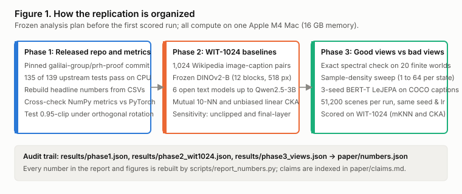
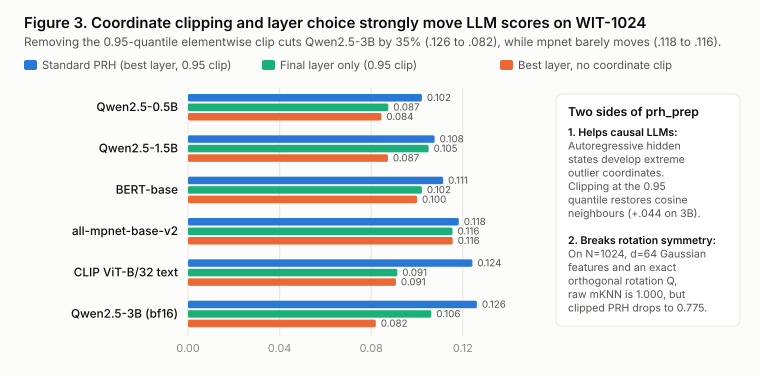
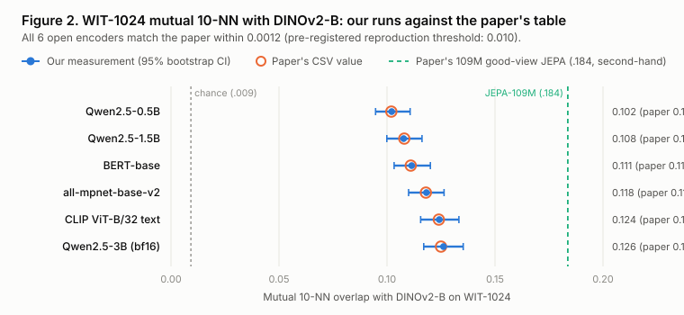
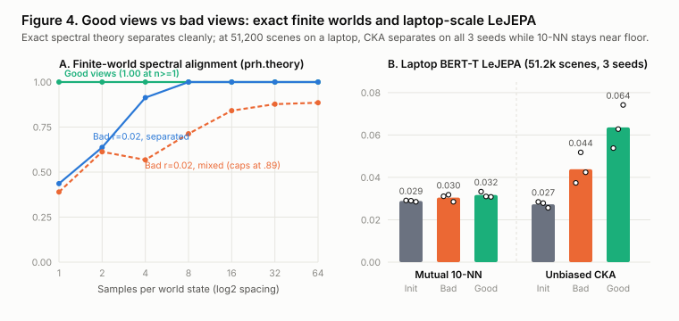

My Take on PRH-JEPA
Do good views make separate encoders align, and do the published baselines and tests hold up on one laptop?
Mohamed Ansar · Technical report · 6 November 2026
Independent work, not peer reviewed. Every number I measured in this report comes from runs in the accompanying repository, on the machine named next to it; numbers rebuilt from the authors' released CSV files are marked as second-hand. Claims are numbered like [C10] and listed with their evidence in paper/claims.md.
Abstract
Proving and Improving the Platonic Representation Hypothesis with JEPAs (arXiv:2610.39302, Balestriero and LeCun, released 30 October 2026 under the MIT licence) argues that separate encoders trained on different modalities learn the same representation up to one orthogonal rotation when trained at exact global minimisers under matched world-state marginals with conditionally independent views of the same underlying state ("good views", such as two captions of one scene). It also reports that a 109M-parameter text JEPA trained on multi-caption image sets aligns better with vision models than language models up to 72B parameters. Because the work is new, I could find no independent check of its code, released tables or baseline measurements. I tested what fits on one 16 GB Apple M4 Mac with no paid compute across three phases [C1, C10, C17, C24].
First, the released repository (galilai-group/prh-proof) held up well under audit. On CPU, 135 of 139 upstream pytest tests passed unchanged, 3 skipped for optional video, captioning and optimal-transport packages, and 1 failed only because pytest 9.2.0 tries to iterate over a zero-dimensional PyTorch tensor inside pytest.approx while the underlying CKA values agree to below 1e-16 [C1, C2]. Every headline number in the authors' README rebuilt cleanly from paper/data/*.csv except one COCO captioning score (.838 CIDEr), which their own reproduction guide marks as typed directly into the manuscript with no backing CSV [C7]. Reading the CSVs alongside the prose clarified two headlines: their "42x fewer samples" comparison (21.6M against 900M samples, 41.67x) is 13.89x in tokens (2.77B against 38.52B) because each good-view sample reads three captions [C4], and their scaling-law error is 0.0093 RMSE on the 85 random held-out runs (0.0109 across all 88 held-out runs once 3 long 320M-sample extrapolation runs are included) [C6].
Second, I wrote independent NumPy implementations of the paper's alignment metrics and ran six open text encoders (Qwen2.5-0.5B, Qwen2.5-1.5B, Qwen2.5-3B, bert-base-uncased, all-mpnet-base-v2 and clip-vit-base-patch32) plus DINOv2-B from scratch on the 1,024-pair WIT-1024 benchmark. My metric code agreed with prh.metrics to 9.8e-5 on mutual 10-nearest-neighbours (a single tied 10th neighbour out of 10,240 edges between 32-bit and 64-bit floats) and 1.0e-8 on unbiased linear CKA [C8]. All 6 open models reproduced the paper's published WIT-1024 scores within 0.0012 on mutual 10-NN and 0.0004 on CKA, well inside the 0.010 threshold frozen before the first run [C10 to C12].
Third, I tested good views against bad views in exact finite worlds and in six controlled laptop neural LeJEPA runs (BERT-T, 11.3M parameters, 51,200 COCO scenes or 204,800 views per run across 3 seeds). In 20 finite product worlds where state marginals match and nuisances are conditionally independent given the state, exact spectral JEPAs with good views reached 0.0 cross-modal error while bad views put all 5.0 top directions into nuisance (10.0 error) [C15]; in sample-density sweeps on finite 1D worlds under the same spectral setup, good views reached 1.000 canonical correlation at 1 sample per state while short-reach bad views started at 0.436 (and capped at 0.885 when classes touched) [C16]. At laptop neural scale (about 1 / 844 of the 21.6M-sample run behind the "42x" headline, and 1 / 59 of the smallest run in the authors' scaling grid), my pre-registered primary score, discrete mutual 10-NN on WIT-1024, barely moved from initialization (0.0289 at step 0 to 0.0305 for bad views and 0.0317 for good views, no clear separation) [C17]. Continuous global alignment (unbiased linear CKA), however, separated in the paper's direction on all 3 seeds (0.0636 for good views against 0.0439 for bad views, from 0.0273 at step 0), even though bad views achieved lower training invariance loss (0.328 against 0.395) by matching masked spans of the same sentence [C18, C19].
As in earlier studies, the sharpest lessons came from the measuring itself. The PRH benchmark's standard feature preprocessing clips every coordinate at its 0.95 quantile before L2 normalisation: on isotropic Gaussian features, an exact orthogonal rotation drops this clipped mutual 10-NN score from 1.0000 to 0.7746 even though the paper's theorems identify representations up to orthogonal rotation [C9], yet on real language models removing that same clip cuts Qwen2.5-3B by 35% (0.1262 to 0.0820) and flattens Qwen scaling because causal transformers concentrate huge activations in a handful of outlier dimensions [C13]. Three local engineering traps also had to be caught and documented: a pool-shrinkage bug in my own first bootstrap function [C20], a 100.5-megapixel Wikimedia image inside WIT-1024 that drove my first extraction to 19 GB of memory and swap [C21], and a PyTorch 2.15.0 Apple MPS random-generator deadlock inside stable_pretraining's regulariser [C22].
1. Why this question
This is a personal study in the same series as my earlier checks of decision-models and rea-study, where I take a new technical claim with public code, freeze an evaluation plan before scoring, and test what one consumer laptop can honestly verify.
On 5 November 2026 I started sketching an experiment on whether joint-embedding predictive models converge toward vision-aligned representations faster than next-token language models. Before running anything, I searched recent preprints and found that Randall Balestriero and Yann LeCun had released a paper and MIT-licensed codebase six days earlier (galilai-group/prh-proof, 30 October 2026) answering that exact question across 345 training runs and roughly 5,500 GPU-hours [C3, C24]. Rather than pretend my laptop could compete with a 5,500 GPU-hour grid, I turned the project into an independent replication and audit of their release. Searching the web on 5 November 2026 turned up summaries of the preprint and repository, and no independent replication.
One constraint shaped everything that followed: all compute had to run locally on one MacBook Air with an Apple M4 chip, 16 GB of unified memory, roughly 17 to 21 GiB of free disk space, and no cloud GPUs or paid APIs [C23]. That rules out retraining 940M-image models or running 72B-parameter language models, and forces a sharp line between what is checked first-hand and what is audited from the authors' released data.
Within that budget, this report asks four questions:
- Do the authors' released test suite and executable theory checks pass as shipped on CPU?
- Do the headline numbers in their README rebuild cleanly from their released
paper/data/*.csvandpaper/runs.csvfiles, and what do those tables reveal when read closely? - When measured independently from raw images and captions on WIT-1024, do open text encoders match the alignment scores reported in the paper, and how sensitive are those scores to coordinate clipping and layer choice?
- In exact finite worlds and in a controlled laptop-scale neural LeJEPA experiment, do good views beat bad views when encoder size, corpus, optimizer and sample budget are held fixed?
2. Background
A few terms, explained once in plain words.
The Platonic Representation Hypothesis (PRH), proposed by Huh et al. (2024), is the observation that large vision models and large language models trained separately on their own data appear to organize concepts into increasingly similar geometric neighbourhoods as they scale up, as if both were converging toward a shared view of the physical world behind images and text.
A JEPA (Joint-Embedding Predictive Architecture) trains an encoder without reconstructing raw pixels or predicting exact words. Instead, it takes two views of an item, encodes both into internal vectors, and trains a predictor so one view's vector predicts the other's while a regulariser keeps all vectors from collapsing to a single constant point. In this codebase the training objective is LeJEPA, which pairs a mean-squared invariance loss across views of the same scene with SIGReg (SlicedEppsPulley), a statistical test along random 1D projections that pushes the batch of embeddings toward a standard isotropic Gaussian distribution.
Good views and bad views are the paper's central distinction. A good view pair consists of two distinct observations of the same underlying scene or world state, such as two captions written by different people looking at one photograph, or two camera angles of one object. A bad view pair is created by slicing, cropping or masking a single observation, such as two masked token spans taken from the same sentence; two spans of one caption share not only the scene, but also the writer's phrasing, word order and tone ("nuisance" variables). Balestriero and LeCun prove in Theorems 1 to 4 that in finite or compact operator settings, at exact global minimisers where two modalities observe the same marginal distribution over world states and good views are conditionally independent given the world state, each encoder recovers the top eigenspace of the same world transition operator and therefore aligns across modalities up to a single orthogonal rotation, whereas bad views whose nuisance variation dominates state variation place nuisance directions at the top of the spectrum and fail to align [C15, C16].
Mutual k-nearest neighbours (mutual_knn) is the primary alignment score from Huh et al. (2024). Given 1,024 image-caption pairs, an image encoder turns the 1,024 images into 1,024 vectors and a text encoder turns the 1,024 captions into 1,024 vectors. For each item i, we find its k = 10 closest cosine neighbours among the other 1,023 images and its k = 10 closest cosine neighbours among the other 1,023 captions, and count what fraction of the 10 neighbours appear on both lists. Random pairing gives roughly 10 / 1023 = 0.0098 (about 0.009); identical neighbourhood graphs give 1.000.
prh_prep and layer-pair maximisation are two conventions baked into the standard PRH benchmark (prh.metrics.prh_score). Before L2-normalising each [1024, d] layer matrix, every entry is clipped elementwise to plus or minus the 0.95 quantile of absolute values across the whole matrix (prh_prep). Then mutual_knn is computed for every (vision_layer, text_layer) pair and the single highest score across the grid is reported. Section 4.1 tests both choices directly.
Unbiased linear CKA (unbiased_cka) (Centered Kernel Alignment, using the unbiased U-statistic estimator of Song et al., 2012) is a continuous, global similarity score between two [N, d] feature matrices. Unlike mutual_knn, which asks a discrete yes-or-no question about the closest 10 items around each point, linear CKA measures whether pairwise dot-product structures agree across all 1,024 items at once, and equals 1.000 whenever one representation is an orthogonal rotation and uniform scaling of the other.
The paper and repository under test (galilai-group/prh-proof, pinned at commit a2b9949fa907d4fbe562742d4b1ffa7205ab7427, with its companion library galilai-group/stable-pretraining pinned at ab836bf699a2be712dfcf980a5eb70d36391e876) ship the theory verification code (prh/theory.py), benchmark metrics (prh/metrics.py), feature extractors (prh/features.py), training runners (prh/train_text.py), 139 unit tests, paper/runs.csv (345 run tags) and paper/data/*.csv [C1, C3, C24]. Trained model weights for their 345 runs are not distributed in the repository.
3. Method

Figure 1. Study design across Phases 1, 2 and 3. Every summary file feeds scripts/report_numbers.py, which writes paper/numbers.json for this report and its figures.
3.1 Three phases matched to one laptop
To keep first-hand evidence separate from second-hand inspection, the work is divided into three phases:
- Phase 1: Upstream code, tests and CSV audit (
scripts/phase1_audit.py). Run the upstreampytestsuite (-m "not slow"and-m "slow") onvendor/prh-proofwithout editing any upstream file [C1, C2]. Rebuild every headline number in their README frompaper/runs.csvandpaper/data/*.csv[C3 to C7]. Cross-check my independent NumPy implementations inscripts/metrics.py(mutual_knn,unbiased_cka,prh_prep,prh_score) againstprh.metricson four synthetic and outlier-injected test cases (N = 200to1,024) and test howprh_prepbehaves under an exact orthogonal rotation [C8, C9]. - Phase 2: Independent WIT-1024 baseline measurements (
scripts/extract.py,scripts/align.py). Onminhuh/prh(revision="wit_1024",split="train", 1,024 Wikipedia image-caption pairs), extract all 12 transformer blockCLStoken layers fromDINOv2-B(timmvit_base_patch14_dinov2.lvd142m, native518x518crop,float32) and attention-masked mean hidden states across every layer of six open text encoders:Qwen2.5-0.5B,Qwen2.5-1.5B,Qwen2.5-3B(bfloat16, matchingprh/features.py),bert-base-uncased,all-mpnet-base-v2, and the text tower ofclip-vit-base-patch32[C10 to C12]. Each model sees the exact same 1,024 rows in dataset order (ds["text"][i][0],max_length = 512, or77for CLIP) and is scored once againstDINOv2-B. Alongside the standard score, I record final-layer-only alignment and unclipped alignment [C13, C14]. - Phase 3: Good views against bad views (
scripts/phase3_views.py). First, run exact spectral experiments usingprh.theoryacross 20 random clustered product worlds (16states,6nuisances, topk = 5subspace) and 10-seed sample-density sweeps (1, 2, 4, 8, 16, 32, 64samples per state on5 x 61D class worlds,k = 4) [C15, C16]. Second, train six neural text LeJEPA models from scratch onyerevann/coco-karpathy(82,783training scenes, 5 human captions per scene, text only):BERT-T(11,297,664parameters, 4 transformer layers, width 256),400steps of AdamW (lr = 5e-4, cosine schedule,batch_size = 128,4views of up to36tokens per scene,lamb = 0.02, totaling51,200scenes or204,800views per run) across seeds0, 1, 2[C17]. For each seed, initialization weights, scene shuffles and hyperparameters are identical; only the view constructor changes between good views (4 distinct human captions of the same COCO scene, lightly word-dropped by 10%) and bad views (4 random token-span crops of 50% to 85% length with 15%[MASK]tokens drawn from a single caption of that scene). Every run is evaluated at steps0,200and400on the held-out WIT-1024 benchmark againstDINOv2-B[C17 to C19].
3.2 Frozen analysis plan and fairness rules
Before running Phase 1, Phase 2 or Phase 3, I committed docs/analysis-plan.md (commit 44f154d, dated 5 November 2026) and left that file untouched afterwards. Three rules in that freeze govern how results are interpreted:
- Baseline reproduction threshold. An open encoder counts as reproduced if my independent WIT-1024 mutual 10-NN score lies within
0.010of the value inpaper/data/llm_scale.csv[C10]. - No silent edits to upstream tests. Upstream
vendor/prh-proofis tested as shipped; if a test fails for an environment reason, both the raw failure and its cause are reported [C1, C2]. - Scale guard on Phase 3. Because a laptop run is roughly three orders of magnitude smaller than the paper's smallest web-scale WIT run, a null result on
mutual_knnat laptop scale is reported as a scale limit, never as a refutation of the paper's large-scale training runs [C17].
One planned item had to be narrowed after the freeze and is logged in NOTES.md: docs/analysis-plan.md listed Qwen2.5-7B (qwen7b) as a seventh text baseline based on 16 GB RAM alone before I checked free disk space (17 to 21 GiB), which could not safely hold a 15.2 GB weight download alongside unified-memory swap (section 4.3) [C23].
3.3 Uncertainty and licence rules
Every WIT-1024 mutual 10-NN score carries two 95% intervals: a 1,000-draw item bootstrap over the 1,024 per-item overlap fractions on the fixed 1,024-item graph (bootstrap), and a 200-draw 800-of-1,024 subsampling interval without replacement rescaled by sqrt(800 / 224) (subsample_ci, matching prh.metrics.subsample_interval) [C11, C20]. Every external repository, model checkpoint and dataset had its licence read at source and fingerprinted with a 16-hex SHA-256 prefix in docs/licences.md before first use [C24].
4. Findings about the measuring
Four measurement issues shaped this study. Two are mathematical properties of the PRH metric itself, and two are local hardware traps that would bite anyone repeating these runs on an Apple silicon laptop.
4.1 Coordinate clipping breaks rotation symmetry in theory, yet rescues LLM scores in practice
The paper's theoretical contribution proves that under matched state marginals and conditionally independent views at exact global minimisers, two encoders recover the same representation up to an orthogonal transformation Q (Q^T Q = I). Unclipped cosine nearest neighbours (mutual_knn) and unbiased linear CKA are strictly invariant to orthogonal rotations: multiplying every feature vector in A by Q leaves every pairwise dot product and cosine similarity unchanged.
However, the standard PRH benchmark score (prh_score, inherited from Huh et al., 2024) applies prh_prep before normalising each row: it computes the 0.95 quantile of |X| across all N x d entries of a layer and clips every coordinate to [-q, +q]. Clipping along individual coordinate axes is not invariant to orthogonal rotations. While writing unit tests before Phase 1, I tested prh_score on an isotropic 1024 x 64 Gaussian feature matrix A (seed = 0) against an exact random orthogonal rotation A @ Q [C9]:
- Unclipped
mutual_knn(A, A @ Q, k=10):1.0000 - Unclipped
unbiased_cka(A, A @ Q):1.0000 - Standard
prh_scoremutual 10-NN after 0.95-quantile clipping:0.7746 - Standard
prh_scoreunbiased CKA after 0.95-quantile clipping:0.9794
Nearly a quarter of the 10-nearest-neighbour edges disappear between two representations that are literally the same point cloud rotated in 64-dimensional space [C9].

Figure 3. Standard PRH mutual 10-NN (blue) against final-layer-only scoring (green) and unclipped best-layer scoring (orange) on WIT-1024, alongside the synthetic rotation check. Data: C9, C13 and C14.
Why keep an axis-dependent clip at all? Phase 2 answered that question on real models (Figure 3) [C13]. Causal language models such as Qwen2.5 are well known to store massive activations (tens or hundreds of times larger than typical coordinates) in two or three fixed hidden-state dimensions across almost every token. Without coordinate clipping, those outlier dimensions dominate L2 normalisation and collapse cosine distances onto a few shared axes. Removing the 0.95-quantile clip on WIT-1024 cut Qwen2.5-3B by 35% (0.1262 down to 0.0820) and wiped out scaling across the Qwen2.5 family (0.0845 at 0.5B, 0.0873 at 1.5B, 0.0820 at 3B), while barely moving the contrastive sentence encoder all-mpnet-base-v2 (0.1183 to 0.1156, a 0.0026 change) [C13].
Layer selection pulls just as hard [C14]. Across all 6 text encoders, DINOv2-B's best-aligning vision layer for mutual 10-NN was block 10 (the 11th of 12 transformer blocks, 0-indexed) rather than its final block 11, and block 9 for CKA. Restricting both encoders to their final layer dropped CLIP from 0.1242 to 0.0914 (-0.0328) and Qwen2.5-3B from 0.1262 to 0.1062 (-0.0199) [C14]. In short, "PRH alignment" is not a property of raw last-layer outputs; both outlier clipping and intermediate-layer search do heavy lifting for pretrained language and contrastive models.
4.2 My first bootstrap shrank the neighbour pool
Before freezing the plan, I audited the initial scaffold of scripts/metrics.py and caught a subtle statistical bug in bootstrap [C20]. A naive bootstrap that resamples row indices idx = rng.integers(0, N, N) and deduplicates them (np.unique(idx)) keeps only about 1 - (1 - 1/N)^N ≈ 63.2% of the items (~647 of 1,024 rows) while leaving k = 10 fixed. Because random baseline overlap is k / (N_eff - 1), shrinking N_eff from 1,024 to 647 inflates the neighbourhood density and biases bootstrap intervals upward; keeping duplicate rows without deduplicating is worse, because self-copies become zero-distance nearest neighbours of themselves.
I repaired scripts/metrics.py before commit 44f154d by computing each item's exact overlap fraction on the full 1,024-item graph (per_item_mutual_knn) and bootstrapping the mean of those 1,024 numbers, alongside subsample_ci (200 subsets of 800 items drawn without replacement, rescaled by sqrt(800 / 224)) [C20]. Seven unit tests in tests/test_metrics.py lock down both estimators and the rotation check.
4.3 Three runtime traps on a 16 GB Mac: a 100-megapixel image, a disk ceiling and an MPS generator hang
- A 100.5-megapixel image inside WIT-1024 (
task-188). My firstDINOv2-Bextraction loaded all 1,024 images into a Python list at once (list(ds["image"])) withbatch_size = 32at518x518resolution. Process memory climbed to roughly 19 GB, spilling into macOS disk swap and triggeringPIL.Image.DecompressionBombWarning(100,512,000pixels on a full-resolution Wikimedia map scan) [C21]. I canceled that run, rewrotescripts/extract.pyto streamds.select_columns(["image"])in chunks of 8, close each PIL image immediately after preprocessing, and callgc.collect()andtorch.mps.empty_cache()after every batch. Peak resident memory (ru_maxrss) fell to2,220.2 MBforDINOv2-Band stayed between1,379.6 MB(bert) and3,790.8 MB(qwen1.5b) across all six text models [C21]. (One side-effect of running the repairedDINOv2-Bextraction overnight was that the laptop slept mid-run;time.time()counted sleep hours and logged25,056.69 s, so later scripts switched totime.perf_counter()[C21].) - Skipping
Qwen2.5-7Bon a 17 to 21 GiB disk. Checkingdf -h /showed only21 GiBfree (17 GiBonce WIT-1024 was cached).Qwen2.5-7Brequires a15.2 GBsafetensors download on disk plus~15.2 GBinbfloat16unified memory on a 16 GB machine, leaving almost zero room for macOS swap [C23]. Rather than risk filling the disk, I added--cleanup-cachetoscripts/extract.py(deleting each model's cached Hugging Face weight blobs right after its.npzfeatures were verified, freeing0.42 GBto5.90 GBper model) and loggedqwen7binNOTES.mdas skipped for disk safety while leavingdocs/analysis-plan.mdfrozen [C23]. - An Apple MPS deadlock in
SlicedEppsPulley(task-277). My first Phase 3 LeJEPA run hung silently on step 1 for 38 minutes at357 MBRSS and ~13% CPU [C22]. Tracingstable_pretraining/losses/lejepa.py(line 125) showed thatSlicedEppsPulley.forwardcreatestorch.Generator(device=x.device)and calls.manual_seed(int(self.step.item())); on PyTorch2.15.0withdevice="mps", seeding an MPS generator inside the training step deadlocked. Keeping theBERT-Ttransformer and projector on MPS while running only the scalarSlicedEppsPulleyprojection test on CPU eliminated the deadlock completely, completing all 6 neural training runs and 18 WIT-1024 evaluations in2,135.35 s(35.6minutes) at2,475.5 MBpeak RSS [C22].
5. Results
All first-hand runs come from one study machine: macOS-27.0.1-arm64-arm-64bit (an Apple M4 MacBook Air with 16 GB of unified memory; the JSON records capture the OS string and arm processor via Python platform, while the Mac model and RAM size are as reported by the owner), running Python 3.12.15, PyTorch 2.15.0, transformers 5.22.1, timm 1.0.31, datasets 5.1.0 and numpy 2.5.4, testing galilai-group/prh-proof commit a2b9949fa907d4fbe562742d4b1ffa7205ab7427.
5.1 Phase 1: upstream tests, released CSVs and metric cross-check
Running pytest on vendor/prh-proof unchanged collected 139 tests [C1]:
- Fast suite (
pytest -m "not slow"):133passed,3skipped,1failed in51.80 s[C1]. - Slow suite (
pytest -m "slow"):2passed in81.99 s(end-to-end finite-world and toy training checks) [C1]. - Why 3 skipped: clean
pytest.importorskipguards for optional packages I did not need for Phases 1 to 3 (decordfor MSR-VTT.mp4decoding,pycocoevalcapfor Java CIDEr evaluation, andunpaired_rosettafor optimal-transport pair-free dispatch) [C1]. - Why 1 failed:
tests/test_metrics.py::test_unbiased_cka_matches_the_u_statistic_and_its_invariancesraisedTypeError: iteration over a 0-d tensorinsidepytest.approx(reference)underpytest 9.2.0(whose_contains_decimalhelper checksisinstance(x, Iterable)on a 0-dimensionaltorch.Tensor). Callingfloat(reference)matchedunbiased_cka(a, b)to< 1e-16[C2].
Auditing paper/runs.csv found 345 unique run tags: 321 completed, 18 cancelled and 6 failed [C3]. Rebuilding every headline claim in the upstream README from paper/data/*.csv gave the following picture [C4 to C7]:
| Headline in authors' README | What paper/data/*.csv gives |
Status and nuance |
|---|---|---|
109M good-view text JEPA reaches .184 on WIT-1024 vs DINOv2-B, ahead of Qwen2.5-72B (.154) and Llama-3-70B (.151) |
scaling.csv seeds: 0.191, 0.179, 0.181 (mean 0.1837); llm_scale.csv: 0.154 and 0.151 |
Rebuilds from CSV [C5]. A 4th higher-regularisation seed (.121) is disclosed in the README text and scored against CLIP in vision_families.csv (0.145, 0.150, 0.157), not in scaling.csv. |
Same 109M JEPA reaches .230 with CLIP ViT-H (vs .210 Qwen2.5-72B) and .161 on COCO-5k |
vision_families.csv seeds: 0.233, 0.230, 0.227 (0.230); coco.csv seeds: 0.169, 0.159, 0.156 (0.1613) |
Rebuilds from CSV [C7]. Note mpnet already reaches 0.156 on COCO-5k in coco.csv. |
| Good views match next-token prediction with "42x fewer samples" | BERT-S good views at 21.6M samples (0.1080 mean) vs BERT-B next-token at 900M samples (0.1107 mean): 41.67x samples |
Rebuilds, with a 3x token caveat [C4]. In phase_real.csv, each good-view sample reads 3 captions (128.4 vs 42.8 tokens), so the token ratio is 13.89x (38.52B / 2.77B). The 8 training views per sample (2 global, 6 local) are cut from those 3 captions, so the token count follows the captions, not the views. |
Held-out scaling law predicts WIT-1024 to .0093 RMSE beside .0096 seed noise |
phase_law_predictions.csv: 0.0093 on 85 design == "random" runs; 0.0096 pairwise seed RMSE |
Rebuilds, subset-dependent [C6]. Including the 3 pre-registered 320M-sample design == "long" runs (88 held-out runs total, as tables.py prints) gives 0.0109 RMSE. |
Pair-free alignment on COCO 2014: 86.0% CIFAR-10, 67.2% CIFAR-100, 64.4% ImageNet-100, .018 FOSCTTM |
pairfree_coco.csv across 15 runs: 86.03%, 67.21%, 64.42%, 0.0178 |
Rebuilds from CSV [C7] (second-hand; not re-run). |
Linear map into frozen LLM decoder: .838 CIDEr on COCO, .246 on MSR-VTT |
video.csv gives 0.2457 (.246) for rotation and 0.2682 for learned map; no CSV for .838 |
MSR-VTT rebuilds; COCO .838 is typed [C7]. docs/reproduce.md explicitly labels tab:captioner_scale as typed with no CSV in paper/data/. |
Cross-checking scripts/metrics.py against prh.metrics across four synthetic matrices (N = 200 to 1,024, with and without heavy-tailed outliers) gave a maximum absolute difference of 5.3e-9 on mutual_knn, 2.8e-17 on unbiased_cka, 1.5e-9 on prh_score mutual 10-NN and 6.1e-9 on prh_score CKA, picking the exact same (layer_a, layer_b) pair in every case [C8].
5.2 Phase 2: independent WIT-1024 baselines
All 6 of 6 open text encoders extracted on my Mac reproduced the paper's WIT-1024 scores against DINOv2-B well inside the pre-registered 0.010 threshold: the largest gap against the paper's 3-decimal CSV tables was 0.0012 on mutual 10-NN (Qwen2.5-3B, 0.1262 vs 0.125, likely bfloat16 MPS vs CUDA rounding) and 0.0004 on unbiased linear CKA [C10 to C12]. Comparing my NumPy scorer directly against prh.metrics on the saved .npz features gave agreement to 0.0 or 1e-8 on 5 of 6 models and 9.77e-5 on Qwen2.5-1.5B (literally 1 neighbour edge out of 10,240 swapping at a float32/float64 cosine tie), with identical best layer indices on all 6 models [C8].

Figure 2. My independent WIT-1024 mutual 10-NN measurements (blue, with 95% bootstrap intervals) against the paper's reported numbers (hollow orange circles). Chance overlap on shuffled indices is ~0.009. Data: C5, C10 and C11.
| Text encoder | Layers (V, T best) |
Mutual 10-NN (ours) | 95% bootstrap CI | Paper 10-NN | Unbiased CKA (ours / paper) | Final-layer 10-NN | Unclipped 10-NN |
|---|---|---|---|---|---|---|---|
Qwen2.5-0.5B |
25 (10, 22) |
0.1021 |
[0.0947, 0.1107] |
0.102 |
0.3178 / 0.318 |
0.0875 |
0.0845 |
Qwen2.5-1.5B |
29 (10, 27) |
0.1077 |
[0.0999, 0.1162] |
0.108 |
0.3243 / 0.324 |
0.1051 |
0.0873 |
BERT-base |
13 (10, 11) |
0.1114 |
[0.1033, 0.1201] |
0.111 |
0.2916 / 0.292 |
0.1021 |
0.1000 |
all-mpnet-base-v2 |
13 (10, 12) |
0.1183 |
[0.1100, 0.1264] |
0.118 |
0.3899 / 0.390 |
0.1155 |
0.1156 |
CLIP ViT-B/32 text |
13 (10, 10) |
0.1242 |
[0.1156, 0.1333] |
0.124 |
0.3393 / 0.339 |
0.0914 |
0.0908 |
Qwen2.5-3B (bf16) |
37 (10, 32) |
0.1262 |
[0.1170, 0.1353] |
0.125 |
0.3634 / 0.363 |
0.1062 |
0.0820 |
Two patterns in this table matter beyond exact numerical agreement:
- Local 10-NN and global CKA rank encoder families differently [C11, C12]. On local mutual 10-NN,
Qwen2.5-3B(0.1262) andCLIP(0.1242) sit at the top of these six models andall-mpnet-base-v2is third (0.1183). On global unbiased linear CKA,all-mpnet-base-v2leads all six models by a wide margin (0.3899, ahead ofQwen2.5-3Bat0.3634andCLIPat0.3393). Contrastive sentence training (mpnet, trained on over 1B text pairs) already organizes global cosine geometry smoothly without needing coordinate clipping (0.1156unclipped vs0.1183clipped) [C12, C13]. - Subsampling intervals are nearly twice as wide as fixed-pool bootstrap intervals [C11]. Drawing 800 of 1,024 items without replacement gives 95% intervals of roughly
+/- 0.014to0.016(for example[0.1100, 0.1423]onQwen2.5-3B), compared with+/- 0.008to0.009when keeping the 1,024-item graph fixed ([0.1170, 0.1353]), because changing the candidate pool perturbs which items make the top-10 cutoff. Differences smaller than~0.01on WIT-1024 are well within single-benchmark sampling noise.
5.3 Phase 3: good views against bad views in finite worlds and laptop LeJEPA runs

Figure 4. Panel A: finite-world spectral alignment (prh.theory) from 1 to 64 samples per state (10 seeds per point). Panel B: 3-seed laptop neural BERT-T LeJEPA runs (51,200 scenes per run) evaluated on WIT-1024 against DINOv2-B (bars show 3-seed means; white dots show individual seeds). Data: C15 to C18.
Exact finite worlds (prh.theory) [C15, C16]. In 20 randomly generated clustered product worlds (16 scene states, 6 nuisance states, subspace rank k = 5) where both modalities share the exact world-state marginal and good views draw conditionally independent nuisances given the scene state, exact spectral JEPAs trained on good views achieved 0.0 cross-modal subspace error in all 20 worlds, whereas bad views (0.85 state retention, 0.92 nuisance retention) placed all 5.0 top eigendirections onto nuisance variables and hit 10.0 cross-modal error (2k), satisfying Theorem 3's lower bound in 20 of 20 worlds [C15]. In the finite 1D sample-density sweep (5 classes of 6 states, k = 4, 10 seeds per density, Figure 4A) under exact spectral recovery and matched state marginals, good views achieved 1.000 canonical correlation at 1 sample per state, whereas short-reach bad views (r = 0.02) scored 0.436 at 1 sample per state (0.637 at 2, 0.913 at 4) before bridging separated classes (gap = 0.5) at 8 samples per state, and plateaued at 0.885 even at 64 samples per state when classes touched (gap = 0.0, where wider bad views r = 0.12 also plateaued at 0.885 because cross-class leakage mixes eigenspaces) [C16].
Controlled laptop neural LeJEPA (BERT-T, 11.3M parameters, 6 runs) [C17 to C19]. Training for 400 steps (51,200 COCO scenes, 204,800 views, ~5.7 minutes per run) from identical initializations across seeds 0, 1, 2 gave:
Metric on WIT-1024 vs DINOv2-B |
Step 0 (init, 3 seeds) | Bad views (step 400) | Good views (step 400) | Good minus bad |
|---|---|---|---|---|
Primary: Mutual 10-NN (prh_score) |
0.0289 (0.0291, 0.0290, 0.0285) |
0.0305 (0.0311, 0.0318, 0.0285) |
0.0317 (0.0333, 0.0310, 0.0308) |
+0.0012 (2 of 3 seeds; null) [C17] |
Global: Unbiased linear CKA (prh_score) |
0.0273 (0.0285, 0.0279, 0.0256) |
0.0439 (0.0374, 0.0518, 0.0424) |
0.0636 (0.0538, 0.0628, 0.0742) |
+0.0197 (3 of 3 seeds) [C18] |
Trained head: Last-layer CLS 10-NN |
0.0252 (0.0258, 0.0242, 0.0257) |
0.0212 (0.0229, 0.0208, 0.0198) |
0.0257 (0.0245, 0.0252, 0.0274) |
+0.0045 (3 of 3 seeds) [C19] |
| Training invariance loss (step 400, COCO) | 0.1147 (step 1) |
0.3276 (0.327, 0.322, 0.333) |
0.3951 (0.399, 0.393, 0.393) |
+0.0675 (harder task) [C18] |
Three honest takeaways come out of those numbers:
- On my pre-registered primary metric (
mutual_knn), 51,200 scenes on a laptop is too small to separate good views from bad views [C17]. Random word-piece overlap in an untrainedBERT-Talready scores0.0289(above the0.009shuffled floor because captions sharing literal nouns share random token embeddings). After204,800views (about1 / 844of the21.6M-sample run behind the "42x" headline, which trains on 8 views per sample: 2 global and 6 local, thetrain.pydefault), bad views averaged0.0305and good views0.0317, well inside each run's+/- 0.0045bootstrap interval and reversing by-0.0009on seed 1. In fact, the smallest runs anywhere inpaper/data/phase_grid.csv(BERT-S,3Msamples, about59xmy51,200scenes) score0.041to0.051on WIT-1024; discrete 10-nearest-neighbour matching out of 1,023 candidates simply requires a much sharper representation than 400 steps on 83k scenes can build. - Continuous global alignment (
unbiased_cka) and the trainedCLStoken already move in the predicted direction on all 3 seeds [C18, C19]. Unbiased linear CKA more than doubled from initialization under good views (0.0273to0.0636, beating bad views by+0.0164,+0.0110and+0.0319on seeds0, 1, 2), while on the last-layerCLSrepresentation directly fed into LeJEPA's projector, bad views degraded below random initialization on every seed (0.0252down to0.0212) whereas good views held above bad views on all 3 seeds (0.0257) [C18, C19]. - Training loss moves in the opposite direction to visual alignment [C18]. Bad views reached substantially lower invariance loss than good views on all 3 seeds (
0.328vs0.395), because two masked spans of the same caption share exact words and syntax, making prediction easy without learning scene semantics. Good views force the model to predict across two independent human descriptions that may share almost no surface words, raising training loss while improving alignment withDINOv2-B.
6. What this means
Everything I could test directly in galilai-group/prh-proof proved unusually clean and reproducible. The code runs on CPU and Apple silicon with minimal friction, 135 of 139 tests pass out of the box (with the single failure caused by a pytest 9.2.0 0-d tensor check rather than a math bug), and all 6 open pretrained text baselines I ran on WIT-1024 matched the authors' published mutual 10-NN and CKA tables to around the third decimal place [C1, C2, C10].
At the same time, reading the code and tables closely surfaces three points that any reader of the paper should keep in view:
- Sample efficiency vs token efficiency. When a multi-view text JEPA draws multiple captions per scene, counting "samples" counts scenes rather than tokens read. In the authors' released tables, the headline
41.67xreduction in samples (21.6Mvs900M) corresponds to a13.89xreduction in tokens (2.77Bvs38.52B) [C4]. Nearly14xfewer tokens is still a large gain, and reporting both ratios avoids confusion. - Theory works modulo orthogonal rotation, whereas the standard PRH metric does not. Under matched world-state marginals, exact global minimisers and conditionally independent views, Theorems 1 to 4 guarantee alignment up to an orthogonal transformation
Q, whichunbiased_ckaand unclippedmutual_knnrespect exactly (1.0000) [C9, C15]. Standardprh_score, however, clips coordinates elementwise at the 0.95 quantile before L2 normalisation, breaking orthogonal invariance (0.7746on rotated Gaussian features) while accounting for 35% of causal LLM scores likeQwen2.5-3B's (0.1262clipped,0.0820unclipped) [C9, C13]. Reporting CKA alongside mutual k-NN, and unclipped scores alongside clipped ones, separates true subspace convergence from coordinate-outlier cleanup. - Early view-quality signal appears in global CKA long before discrete k-NN. At
51,200scenes on a laptop, mutual 10-NN barely budges from token-overlap initialization (0.0305vs0.0317), yet global CKA already separates good views from bad views on all 3 seeds (0.0636vs0.0439), and bad-view invariance optimization actively hurts the trainedCLStoken (0.0252to0.0212) [C17 to C19].
7. Limits
- No web-scale retraining or 70B inference. I did not re-run the paper's 940M-image Recap runs (
.184on WIT-1024), 72B LLM baselines, 145-run scaling-law grid, ImageNet vision JEPAs, optimal-transport pair-free runs, or captioners. Those numbers are audited only frompaper/data/*.csvand marked second-hand [C3 to C7]. - One skipped baseline (
Qwen2.5-7B). Six of the seven planned text encoders were run;qwen7bwas skipped after checking free disk space (17to21 GiBvs15.2 GBweights plus unified-memory swap on a 16 GB machine) and logged inNOTES.md[C23]. - Single vision reference (
DINOv2-B) in Phases 2 and 3. The paper also tests CLIP ViT-H, MAE and I-JEPA vision encoders; I usedDINOv2-Bas frozen indocs/analysis-plan.md[C10]. - Laptop training scale (
1 / 59of the smallest run in the authors' scaling grid,1 / 844of the run behind the "42x" headline). SixBERT-Truns of400steps (51,200COCO scenes, max 36 tokens per view) test only the very beginning of optimization, on a narrower caption domain (COCO everyday photos) than Wikipedia's encyclopedic WIT-1024 evaluation set [C17]. - The neural view comparison changes more than view quality. Bad views are
50%to85%crops of one caption with15%[MASK]tokens; good views are whole, different captions with10%word dropout. Source, length and masking all differ between the two arms, so the Phase 3 gap cannot be put down to view quality alone. With 3 seeds and CKA values near0.06, it is a direction, not a settled effect [C17 to C19]. - Exact spectral finite worlds do not test neural optimization. My Phase 3 finite-world checks (
prh.theory) solve exact matrix eigensystems under matched state marginals and independent nuisances; real datasets have mismatched image/text frequency distributions and imperfect optimizers [C15, C16]. - Hardware metadata and sleep timer. Run JSON files record
macOS-27.0.1-arm64-arm-64bitvia Pythonplatform.platform(), whereas "Apple M4, 16 GB unified memory" is recorded from my own spec sheet (NOTES.mdinitially wroteDarwin 25.0.0by hand beforeplatform.platform()was logged). Also,dinov2's logged elapsed time (25,056.69 s) includes overnight laptop sleep becauseextract.pyinitially used wall-clocktime.time()before switching totime.perf_counter()[C21]. - One upstream table (
tab:captioner_scale,.838COCO CIDEr) has no CSV.docs/reproduce.mdmarks ittyped; I have no evidence that the number is wrong, only thatpaper/tables.pycannot rebuild it frompaper/data/[C7].
8. Reproducing this
Everything runs locally on macOS (Apple silicon, 16 GB RAM, ~20 GiB free disk) with Python 3.12 and no API keys:
- Clone this repository and create
.venv, then clonegalilai-group/prh-proofata2b9949fa907d4fbe562742d4b1ffa7205ab7427intovendor/prh-proofand installgalilai-group/stable-pretrainingatab836bf699a2be712dfcf980a5eb70d36391e876. - Run my metric unit tests:
.venv/bin/python -m unittest discover -s tests -v(7 tests) [C20]. - Run Phase 1 (upstream
pytest, CSV headline audit and metric cross-check):.venv/bin/python scripts/phase1_audit.py-> writesresults/phase1.json[C1 to C9]. - Run Phase 2 extractions on WIT-1024 with automatic weight-cache cleanup: -
.venv/bin/python scripts/extract.py --model dinov2 --batch-size 8- For eachminbert clip mpnet qwen0.5b qwen1.5b qwen3b:.venv/bin/python scripts/extract.py --model $m --cleanup-cache- Score all saved.npzfeatures:.venv/bin/python scripts/align.py-> writesresults/phase2_wit1024.json[C10 to C14]. - Run Phase 3 (finite-world spectral checks and 6 laptop
BERT-TLeJEPA runs on COCO captions):.venv/bin/python scripts/phase3_views.py-> writesresults/phase3_views.json[C15 to C19]. - Rebuild every number in this report and redraw all four SVG figures: -
.venv/bin/python scripts/report_numbers.py-> writespaper/numbers.json-.venv/bin/python scripts/make_figures.py-> writespaper/figures/fig1-study-design.svgthroughfig4-good-vs-bad-views.svg.
Appendix A. Claims ledger
See paper/claims.md: 24 numbered claims ([C1] to [C24]) listing the exact number, the JSON field or script check behind it, how it was verified (script, read or both), and what limits it, followed by the explicit list of claims this report does not make.
Appendix B. Sources and licences
- Paper and codebase under test: Randall Balestriero and Yann LeCun, Proving and Improving the Platonic Representation Hypothesis with JEPAs (
arXiv:2610.39302),github.com/galilai-group/prh-proofat commita2b9949fa907d4fbe562742d4b1ffa7205ab7427, MIT licence [C24]. - Training library:
github.com/galilai-group/stable-pretrainingat commitab836bf699a2be712dfcf980a5eb70d36391e876, MIT licence [C24]. - Evaluation benchmark: WIT-1024 from Huh et al. (2024), The Platonic Representation Hypothesis, distributed at
huggingface.co/datasets/minhuh/prh(revision="wit_1024"), CC BY-SA 3.0 Unported [C24]. - Pretrained encoders:
vit_base_patch14_dinov2.lvd142m(Apache 2.0),Qwen2.5-0.5BandQwen2.5-1.5B(Apache 2.0),Qwen2.5-3B(Qwen Research License, non-commercial research),bert-base-uncased(Apache 2.0),all-mpnet-base-v2(Apache 2.0), andclip-vit-base-patch32(MIT) [C24]. - Phase 3 caption corpus:
yerevann/coco-karpathy(COCO Consortium Annotations, CC BY 4.0) [C24]. - Complete licence table with 16-hex SHA-256 file fingerprints:
docs/licences.md. - Dated build, failure and repair log:
NOTES.md.